rxode2 event tables
In general, rxode2 event tables follow NONMEM dataset convention with the exceptions:
- The compartment data item (
cmt) can be a string/factor with compartment names- You may turn off a compartment with a negative compartment number or “-cmt” where cmt is the compartment name.
- The compartment data item (
cmt) can still be a number, the number of the compartment is defined by the appearance of the compartment name in the model. This can be tedious to count, so you can specify compartment numbers easier by using thecmt(cmtName)at the beginning of the model.
- An additional column,
durcan specify the duration of infusions;- Bioavailability changes will change the rate of infusion since
dur/amtare fixed in the input data. - Similarly, when specifying
rate/amtfor an infusion, the bioavailability will change the infusion duration sincerate/amtare fixed in the input data.
- Bioavailability changes will change the rate of infusion since
- Some infrequent NONMEM columns are not supported:
pcmt,call. - NONMEM-style events are supported (0: Observation, 1: Dose, 2:
Other, 3: Reset, 4: Reset+Dose). Additional events are supported:
-
evid=5or replace event; This replaces the value of a compartment with the value specified in theamtcolumn. This is equivalent todeSolve=replace. -
evid=6or multiply event; This multiplies the value in the compartment with the value specified by theamtcolumn. This is equivalent todeSolve=multiply. -
evid=7or transit compartment model/phantom event. This puts the dose in thedose()function and calculates time since last dosetad()but doesn’t actually put the dose in the compartment. This allows thetransit()function to easily apply to the compartment.
-
Here are the legal entries to a data table:
| Data Item | Meaning | Notes |
|---|---|---|
| id | Individual identifier | Can be a integer, factor, character, or numeric |
| time | Individual time | Numeric for each time. |
| amt | dose amount | Positive for doses zero/NA for observations |
| rate | infusion rate | When specified the infusion duration will be dur=amt/rate |
| rate = -1, rate modeled; rate = -2, duration modeled | ||
| dur | infusion duration | When specified the infusion rate will be rate = amt/dur |
| evid | event ID | 0=Observation; 1=Dose; 2=Other; 3=Reset; 4=Reset+Dose; 5=Replace; 6=Multiply;7=Transit |
| cmt | Compartment | Represents compartment #/name for dose/observation |
| ss | Steady State Flag | 0 = non-steady-state; 1=steady state; 2=steady state +prior states |
| ii | Inter-dose Interval | Time between doses. |
| addl | # of additional doses | Number of doses like the current dose. |
Other notes:
- The
evidcan be the classic RxODE (described here) or theNONMEM-styleeviddescribed above. -
NONMEM’sDVis not required;rxode2is a ODE solving framework. -
NONMEM’sMDVis not required, since it is captured inEVID. - Instead of
NONMEM-compatible data, it can acceptdeSolvecompatible data-frames.
When returning the rxode2 solved data-set there are a
few additional event ids (EVID) that you may see depending
on the solving options:
-
EVID = -1is when a modeled rate ends (corresponds torate = -1) -
EVID = -2is when a modeled duration ends (corresponds torate=-2) -
EVID = -10when a rate specified zero-order infusion ends (corresponds torate > 0) -
EVID = -20when a duration specified zero-order infusion ends (corresponds todur > 0) -
EVID = 101, 102, 103,...These correspond to the1,2,3, … modeled time (mtime).
These can only be accessed when solving with the option combination
addDosing=TRUE and subsetNonmem=FALSE. If you
want to see the classic EVID equivalents you can use
addDosing=NA.
To illustrate the event types we will use the model from the original
rxode2 tutorial.
#> rxode2 3.0.3 using 2 threads (see ?getRxThreads)
#> no cache: create with `rxCreateCache()`
## Model from rxode2 tutorial
m1 <- function() {
ini({
KA <- 2.94E-01
CL <- 1.86E+01
V2 <- 4.02E+01
Q <- 1.05E+01
V3 <- 2.97E+02
Kin <- 1
Kout <- 1
EC50 <- 200
## Added modeled bioavaiblity, duration and rate
fdepot <- 1
durDepot <- 8
rateDepot <- 1250
})
model({
C2 <- centr/V2
C3 <- peri/V3
d/dt(depot) <- -KA*depot
f(depot) <- fdepot
dur(depot) <- durDepot
rate(depot) <- rateDepot
d/dt(centr) <- KA*depot - CL*C2 - Q*C2 + Q*C3
d/dt(peri) <- Q*C2 - Q*C3
d/dt(eff) <- Kin - Kout*(1-C2/(EC50+C2))*eff
eff(0) <- 1
})
}Bolus/Additive Doses
A bolus dose is the default type of dose in rxode2 and
only requires the amt/dose. Note that this
uses the convenience function et() described in the rxode2 event tables
#> -- EventTable with 101 records --
#> 1 dosing records (see x$get.dosing(); add with add.dosing or et)
#> 100 observation times (see x$get.sampling(); add with add.sampling or et)
#> multiple doses in `addl` columns, expand with x$expand(); or etExpand(x)
#> -- First part of x: --
#> # A tibble: 101 x 5
#> time amt ii addl evid
#> [h] <dbl> [h] <int> <evid>
#> 1 0 NA NA NA 0:Observation
#> 2 0 10000 12 2 1:Dose (Add)
#> 3 0.242 NA NA NA 0:Observation
#> 4 0.485 NA NA NA 0:Observation
#> 5 0.727 NA NA NA 0:Observation
#> 6 0.970 NA NA NA 0:Observation
#> 7 1.21 NA NA NA 0:Observation
#> 8 1.45 NA NA NA 0:Observation
#> 9 1.70 NA NA NA 0:Observation
#> 10 1.94 NA NA NA 0:Observation
#> # i 91 more rows#> i parameter labels from comments are typically ignored in non-interactive mode#> i Need to run with the source intact to parse comments
Infusion Doses
There are a few different type of infusions that rxode2
supports:
- Constant Rate Infusion (
rate) - Constant Duration Infusion (
dur) - Estimated Rate of Infusion
- Estimated Duration of Infusion
Constant Infusion (in terms of duration and rate)
The next type of event is an infusion; There are two ways to specify
an infusion; The first is the dur keyword.
An example of this is:
ev <- et(timeUnits="hr") %>%
et(amt=10000, ii=12,until=24, dur=8) %>%
et(seq(0, 24, length.out=100))
ev#> -- EventTable with 101 records --
#> 1 dosing records (see x$get.dosing(); add with add.dosing or et)
#> 100 observation times (see x$get.sampling(); add with add.sampling or et)
#> multiple doses in `addl` columns, expand with x$expand(); or etExpand(x)
#> -- First part of x: --
#> # A tibble: 101 x 6
#> time amt ii addl evid dur
#> [h] <dbl> [h] <int> <evid> [h]
#> 1 0 NA NA NA 0:Observation NA
#> 2 0 10000 12 2 1:Dose (Add) 8
#> 3 0.242 NA NA NA 0:Observation NA
#> 4 0.485 NA NA NA 0:Observation NA
#> 5 0.727 NA NA NA 0:Observation NA
#> 6 0.970 NA NA NA 0:Observation NA
#> 7 1.21 NA NA NA 0:Observation NA
#> 8 1.45 NA NA NA 0:Observation NA
#> 9 1.70 NA NA NA 0:Observation NA
#> 10 1.94 NA NA NA 0:Observation NA
#> # i 91 more rows#> i parameter labels from comments are typically ignored in non-interactive mode#> i Need to run with the source intact to parse comments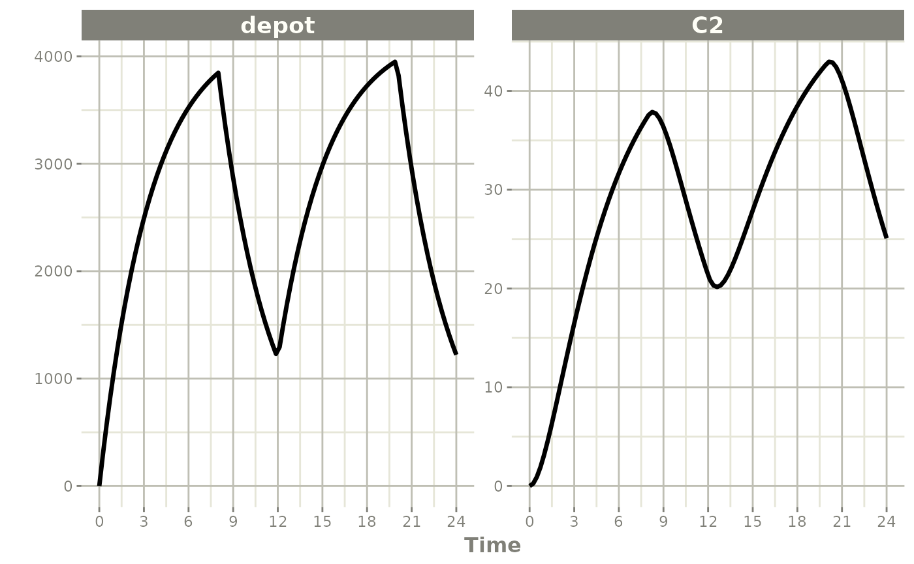
It can be also specified by the rate component:
ev <- et(timeUnits="hr") %>%
et(amt=10000, ii=12,until=24, rate=10000/8) %>%
et(seq(0, 24, length.out=100))
ev#> -- EventTable with 101 records --
#> 1 dosing records (see x$get.dosing(); add with add.dosing or et)
#> 100 observation times (see x$get.sampling(); add with add.sampling or et)
#> multiple doses in `addl` columns, expand with x$expand(); or etExpand(x)
#> -- First part of x: --
#> # A tibble: 101 x 6
#> time amt rate ii addl evid
#> [h] <dbl> <rate/dur> [h] <int> <evid>
#> 1 0 NA NA NA NA 0:Observation
#> 2 0 10000 1250 12 2 1:Dose (Add)
#> 3 0.242 NA NA NA NA 0:Observation
#> 4 0.485 NA NA NA NA 0:Observation
#> 5 0.727 NA NA NA NA 0:Observation
#> 6 0.970 NA NA NA NA 0:Observation
#> 7 1.21 NA NA NA NA 0:Observation
#> 8 1.45 NA NA NA NA 0:Observation
#> 9 1.70 NA NA NA NA 0:Observation
#> 10 1.94 NA NA NA NA 0:Observation
#> # i 91 more rows#> i parameter labels from comments are typically ignored in non-interactive mode#> i Need to run with the source intact to parse commentsThese are the same with the exception of how bioavailability changes the infusion.
In the case of modeling rate, a bioavailability
decrease, decreases the infusion duration, as in NONMEM. For
example:
#> i parameter labels from comments are typically ignored in non-interactive mode#> i Need to run with the source intact to parse comments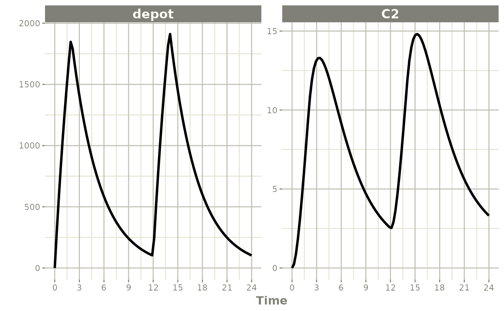
Similarly increasing the bioavailability increases the infusion duration.
#> i parameter labels from comments are typically ignored in non-interactive mode#> i Need to run with the source intact to parse comments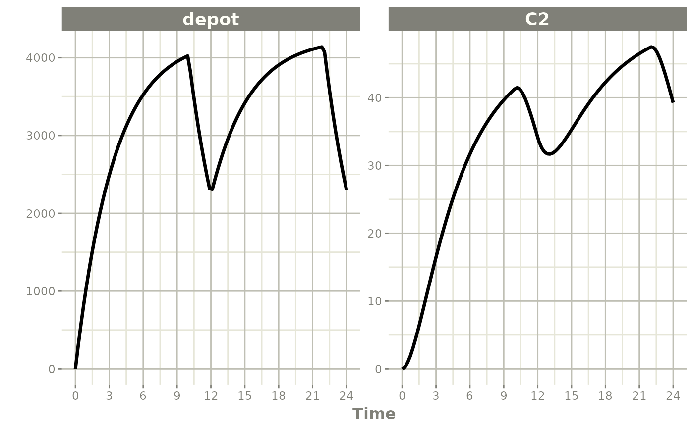
The rationale for this behavior is that the rate and
amt are specified by the event table, so the only thing
that can change with a bioavailability increase is the duration of the
infusion.
If you specify the amt and dur components
in the event table, bioavailability changes affect the rate
of infusion.
ev <- et(timeUnits="hr") %>%
et(amt=10000, ii=12,until=24, dur=8) %>%
et(seq(0, 24, length.out=100))You can see the side-by-side comparison of bioavailability changes
affecting rate instead of duration with these records in
the following plots:
library(ggplot2)
library(patchwork)
p1 <- rxSolve(m1, ev, c(fdepot=1.25)) %>% plot(depot) +
xlab("Time") + ylim(0,5000)#> i parameter labels from comments are typically ignored in non-interactive mode#> i Need to run with the source intact to parse comments#> i parameter labels from comments are typically ignored in non-interactive mode
#> i Need to run with the source intact to parse comments
## Use patchwork syntax to combine plots
p1 * p2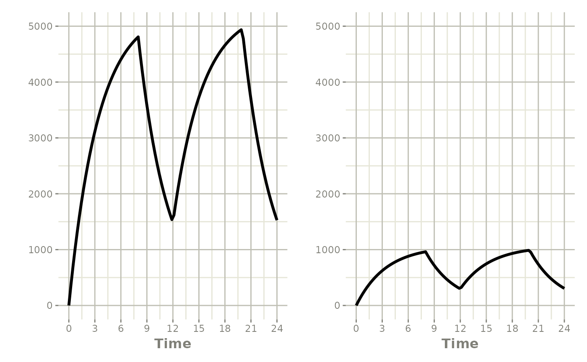
Modeled Rate and Duration of Infusion
You can model the duration, which is equivalent to NONMEM’s
rate=-2.
ev <- et(timeUnits="hr") %>%
et(amt=10000, ii=12,until=24, rate=-2) %>%
et(seq(0, 24, length.out=100))
ev#> -- EventTable with 101 records --
#> 1 dosing records (see x$get.dosing(); add with add.dosing or et)
#> 100 observation times (see x$get.sampling(); add with add.sampling or et)
#> multiple doses in `addl` columns, expand with x$expand(); or etExpand(x)
#> -- First part of x: --
#> # A tibble: 101 x 6
#> time amt rate ii addl evid
#> [h] <dbl> <rate/dur> [h] <int> <evid>
#> 1 0 NA NA NA NA 0:Observation
#> 2 0 10000 -2:dur 12 2 1:Dose (Add)
#> 3 0.242 NA NA NA NA 0:Observation
#> 4 0.485 NA NA NA NA 0:Observation
#> 5 0.727 NA NA NA NA 0:Observation
#> 6 0.970 NA NA NA NA 0:Observation
#> 7 1.21 NA NA NA NA 0:Observation
#> 8 1.45 NA NA NA NA 0:Observation
#> 9 1.70 NA NA NA NA 0:Observation
#> 10 1.94 NA NA NA NA 0:Observation
#> # i 91 more rows#> i parameter labels from comments are typically ignored in non-interactive mode#> i Need to run with the source intact to parse comments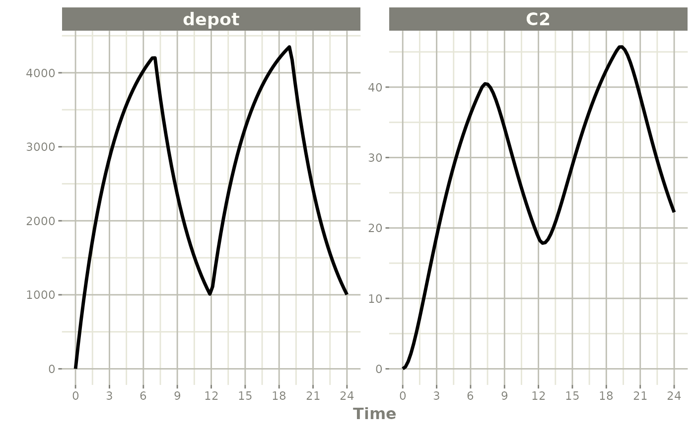
Similarly, you may also model rate. This is equivalent to NONMEM’s
rate=-1 and is how rxode2’s event table
specifies the data item as well.
ev <- et(timeUnits="hr") %>%
et(amt=10000, ii=12,until=24, rate=-1) %>%
et(seq(0, 24, length.out=100))
ev#> -- EventTable with 101 records --
#> 1 dosing records (see x$get.dosing(); add with add.dosing or et)
#> 100 observation times (see x$get.sampling(); add with add.sampling or et)
#> multiple doses in `addl` columns, expand with x$expand(); or etExpand(x)
#> -- First part of x: --
#> # A tibble: 101 x 6
#> time amt rate ii addl evid
#> [h] <dbl> <rate/dur> [h] <int> <evid>
#> 1 0 NA NA NA NA 0:Observation
#> 2 0 10000 -1:rate 12 2 1:Dose (Add)
#> 3 0.242 NA NA NA NA 0:Observation
#> 4 0.485 NA NA NA NA 0:Observation
#> 5 0.727 NA NA NA NA 0:Observation
#> 6 0.970 NA NA NA NA 0:Observation
#> 7 1.21 NA NA NA NA 0:Observation
#> 8 1.45 NA NA NA NA 0:Observation
#> 9 1.70 NA NA NA NA 0:Observation
#> 10 1.94 NA NA NA NA 0:Observation
#> # i 91 more rows#> i parameter labels from comments are typically ignored in non-interactive mode#> i Need to run with the source intact to parse comments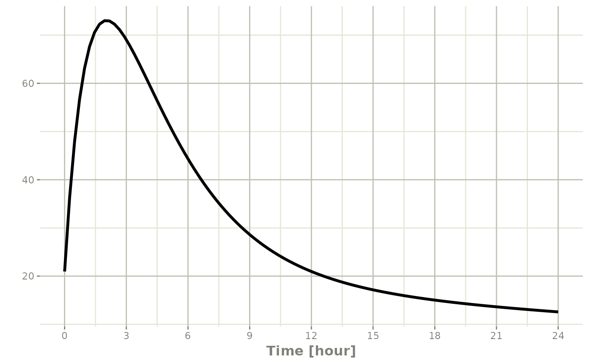
Steady State
These doses are solved until a steady state is reached with a constant inter-dose interval.
#> -- EventTable with 101 records --
#> 1 dosing records (see x$get.dosing(); add with add.dosing or et)
#> 100 observation times (see x$get.sampling(); add with add.sampling or et)
#> -- First part of x: --
#> # A tibble: 101 x 5
#> time amt ii evid ss
#> [h] <dbl> [h] <evid> <int>
#> 1 0 NA NA 0:Observation NA
#> 2 0 10000 12 1:Dose (Add) 1
#> 3 0.242 NA NA 0:Observation NA
#> 4 0.485 NA NA 0:Observation NA
#> 5 0.727 NA NA 0:Observation NA
#> 6 0.970 NA NA 0:Observation NA
#> 7 1.21 NA NA 0:Observation NA
#> 8 1.45 NA NA 0:Observation NA
#> 9 1.70 NA NA 0:Observation NA
#> 10 1.94 NA NA 0:Observation NA
#> # i 91 more rows#> i parameter labels from comments are typically ignored in non-interactive mode#> i Need to run with the source intact to parse comments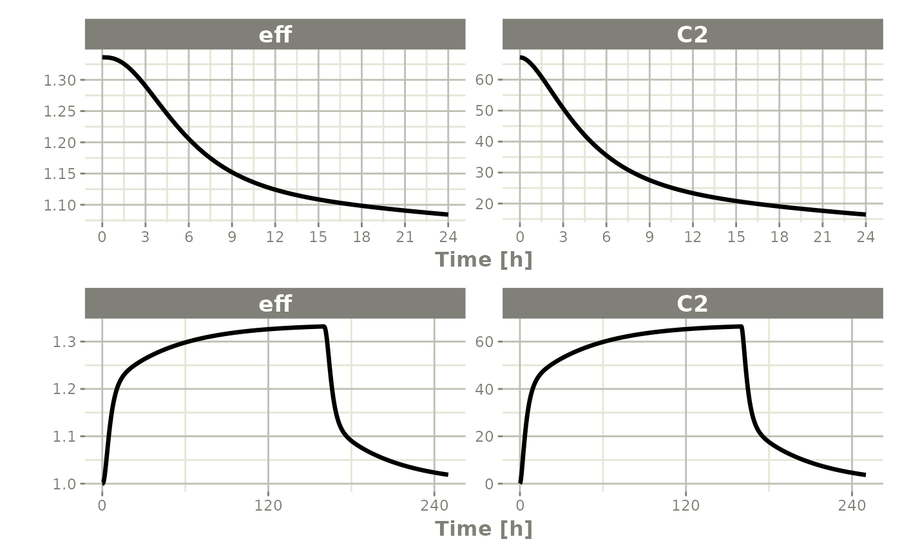
Steady state for complex dosing
By using the ss=2 flag, you can use the
super-positioning principle in linear kinetics to get steady state
nonstandard dosing (i.e. morning 100 mg vs evening 150 mg). This is done
by:
- Saving all the state values
- Resetting all the states and solving the system to steady state
- Adding back all the prior state values
ev <- et(timeUnits="hr") %>%
et(amt=10000, ii=24, ss=1) %>%
et(time=12, amt=15000, ii=24, ss=2) %>%
et(time=24, amt=10000, ii=24, addl=3) %>%
et(time=36, amt=15000, ii=24, addl=3) %>%
et(seq(0, 64, length.out=500))
library(ggplot2)
rxSolve(m1, ev,maxsteps=10000) %>% plot(C2) +
annotate("rect", xmin=0, xmax=24, ymin=-Inf, ymax=Inf,
alpha=0.2) +
annotate("text", x=12.5, y=7,
label="Initial Steady State Period") +
annotate("text", x=44, y=7,
label="Steady State AM/PM dosing")#> i parameter labels from comments are typically ignored in non-interactive mode#> i Need to run with the source intact to parse comments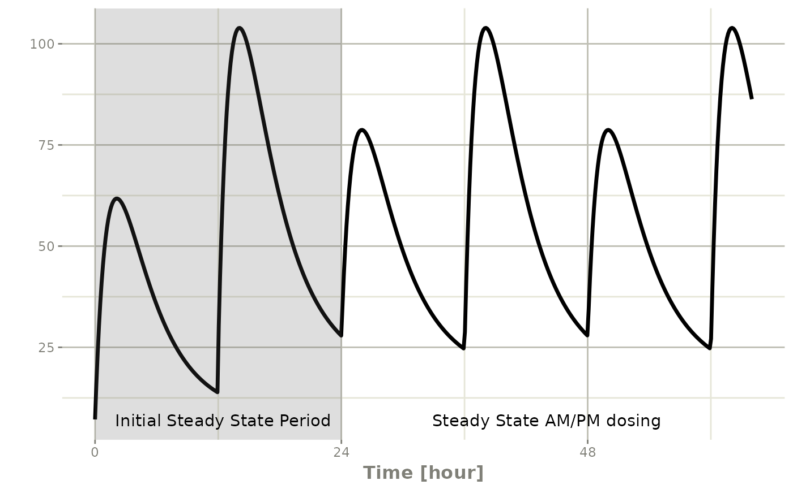
You can see that it takes a full dose cycle to reach the true complex steady state dosing.
Steady state for constant infusion or zero order processes
The last type of steady state that rxode2 supports is
steady-state constant infusion rate. This can be specified the same way
as NONMEM, that is:
- No inter-dose interval
ii=0 - A steady state dose, ie
ss=1 - Either a positive rate (
rate>0) or a estimated raterate=-1. - A zero dose, ie
amt=0 - Once the steady-state constant infusion is achieved, the infusion is turned off when using this record, just like NONMEM.
Note that rate=-2 where we model the
duration of infusion doesn’t make much sense since we are solving the
infusion until steady state. The duration is specified by the steady
state solution.
Also note that bioavailability changes on this steady state infusion
also do not make sense because they neither change the rate
or the duration of the steady state infusion. Hence modeled
bioavailability on this type of dosing event is ignored.
Here is an example:
#> i parameter labels from comments are typically ignored in non-interactive mode#> i Need to run with the source intact to parse comments
ev <- et(timeUnits="hr") %>%
et(amt=200000, rate=10000/8) %>%
et(0, 250, length.out=1000)
p2 <- rxSolve(m1, ev) %>% plot(C2, eff)#> i parameter labels from comments are typically ignored in non-interactive mode
#> i Need to run with the source intact to parse comments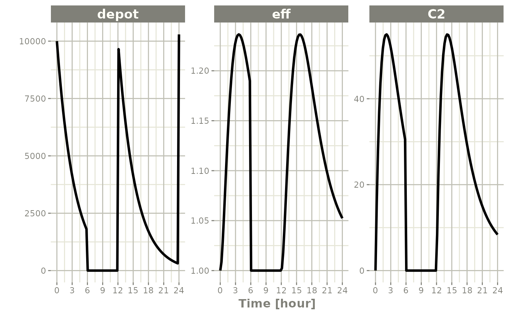
Not only can this be used for PK, it can be used for steady-state disease processes.
Reset Events
Reset events are implemented by evid=3 or
evid=reset, for reset and evid=4 for reset and
dose.
ev <- et(timeUnits="hr") %>%
et(amt=10000, ii=12, addl=3) %>%
et(time=6, evid=reset) %>%
et(seq(0, 24, length.out=100))
ev#> -- EventTable with 102 records --
#> 2 dosing records (see x$get.dosing(); add with add.dosing or et)
#> 100 observation times (see x$get.sampling(); add with add.sampling or et)
#> multiple doses in `addl` columns, expand with x$expand(); or etExpand(x)
#> -- First part of x: --
#> # A tibble: 102 x 5
#> time amt ii addl evid
#> [h] <dbl> [h] <int> <evid>
#> 1 0 NA NA NA 0:Observation
#> 2 0 10000 12 3 1:Dose (Add)
#> 3 0.242 NA NA NA 0:Observation
#> 4 0.485 NA NA NA 0:Observation
#> 5 0.727 NA NA NA 0:Observation
#> 6 0.970 NA NA NA 0:Observation
#> 7 1.21 NA NA NA 0:Observation
#> 8 1.45 NA NA NA 0:Observation
#> 9 1.70 NA NA NA 0:Observation
#> 10 1.94 NA NA NA 0:Observation
#> # i 92 more rowsThe solving show what happens in this system when the system is reset at 6 hours post-dose.
#> i parameter labels from comments are typically ignored in non-interactive mode#> i Need to run with the source intact to parse comments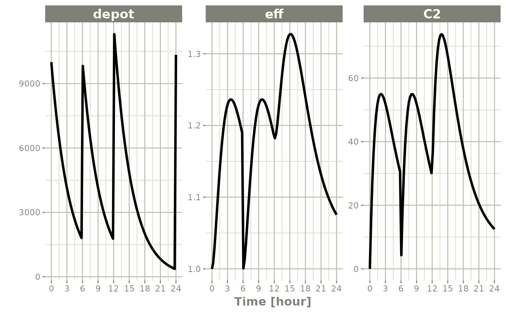
You can see all the compartments are reset to their initial values. The next dose start the dosing cycle over.
ev <- et(timeUnits="hr") %>%
et(amt=10000, ii=12, addl=3) %>%
et(time=6, amt=10000, evid=4) %>%
et(seq(0, 24, length.out=100))
ev#> -- EventTable with 102 records --
#> 2 dosing records (see x$get.dosing(); add with add.dosing or et)
#> 100 observation times (see x$get.sampling(); add with add.sampling or et)
#> multiple doses in `addl` columns, expand with x$expand(); or etExpand(x)
#> -- First part of x: --
#> # A tibble: 102 x 5
#> time amt ii addl evid
#> [h] <dbl> [h] <int> <evid>
#> 1 0 NA NA NA 0:Observation
#> 2 0 10000 12 3 1:Dose (Add)
#> 3 0.242 NA NA NA 0:Observation
#> 4 0.485 NA NA NA 0:Observation
#> 5 0.727 NA NA NA 0:Observation
#> 6 0.970 NA NA NA 0:Observation
#> 7 1.21 NA NA NA 0:Observation
#> 8 1.45 NA NA NA 0:Observation
#> 9 1.70 NA NA NA 0:Observation
#> 10 1.94 NA NA NA 0:Observation
#> # i 92 more rowsIn this case, the whole system is reset and the dose is given
#> i parameter labels from comments are typically ignored in non-interactive mode#> i Need to run with the source intact to parse commentsTurning off compartments
You may also turn off a compartment, which is similar to a reset event.
ev <- et(timeUnits="hr") %>%
et(amt=10000, ii=12, addl=3) %>%
et(time=6, cmt="-depot", evid=2) %>%
et(seq(0, 24, length.out=100))
ev#> -- EventTable with 102 records --
#> 2 dosing records (see x$get.dosing(); add with add.dosing or et)
#> 100 observation times (see x$get.sampling(); add with add.sampling or et)
#> multiple doses in `addl` columns, expand with x$expand(); or etExpand(x)
#> -- First part of x: --
#> # A tibble: 102 x 6
#> time cmt amt ii addl evid
#> [h] <chr> <dbl> [h] <int> <evid>
#> 1 0 (obs) NA NA NA 0:Observation
#> 2 0 (default) 10000 12 3 1:Dose (Add)
#> 3 0.242 (obs) NA NA NA 0:Observation
#> 4 0.485 (obs) NA NA NA 0:Observation
#> 5 0.727 (obs) NA NA NA 0:Observation
#> 6 0.970 (obs) NA NA NA 0:Observation
#> 7 1.21 (obs) NA NA NA 0:Observation
#> 8 1.45 (obs) NA NA NA 0:Observation
#> 9 1.70 (obs) NA NA NA 0:Observation
#> 10 1.94 (obs) NA NA NA 0:Observation
#> # i 92 more rowsSolving shows what this does in the system:
#> i parameter labels from comments are typically ignored in non-interactive mode#> i Need to run with the source intact to parse comments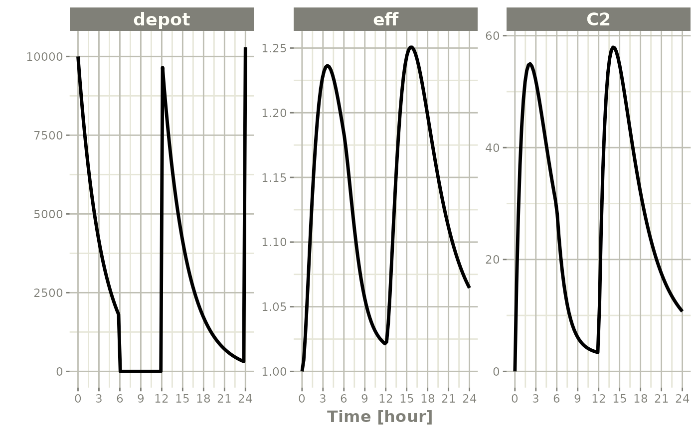
In this case, the depot is turned off, and the depot compartment concentrations are set to the initial values but the other compartment concentrations/levels are not reset. When another dose to the depot is administered the depot compartment is turned back on.
Note that a dose to a compartment only turns back on the compartment that was dosed. Hence if you turn off the effect compartment, it continues to be off after another dose to the depot.
ev <- et(timeUnits="hr") %>%
et(amt=10000, ii=12, addl=3) %>%
et(time=6, cmt="-eff", evid=2) %>%
et(seq(0, 24, length.out=100))
rxSolve(m1, ev) %>% plot(depot,C2, eff)#> i parameter labels from comments are typically ignored in non-interactive mode#> i Need to run with the source intact to parse comments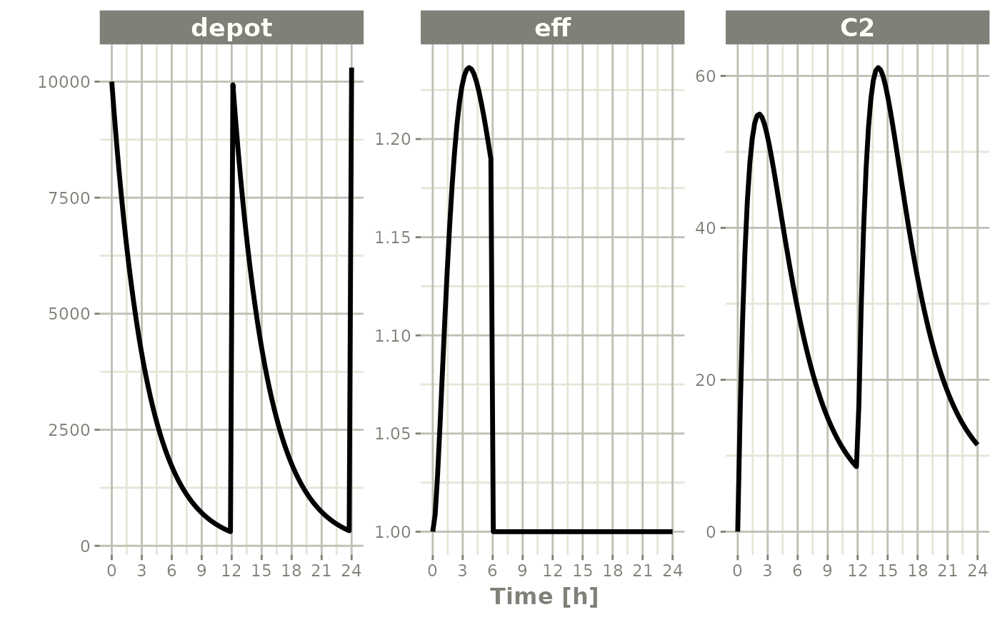
To turn back on the compartment, a zero-dose to the compartment or a evid=2 with the compartment would be needed.
ev <- et(timeUnits="hr") %>%
et(amt=10000, ii=12, addl=3) %>%
et(time=6, cmt="-eff", evid=2) %>%
et(time=12,cmt="eff",evid=2) %>%
et(seq(0, 24, length.out=100))
rxSolve(m1, ev) %>% plot(depot,C2, eff)#> i parameter labels from comments are typically ignored in non-interactive mode#> i Need to run with the source intact to parse comments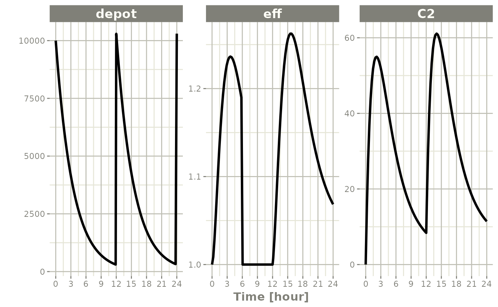